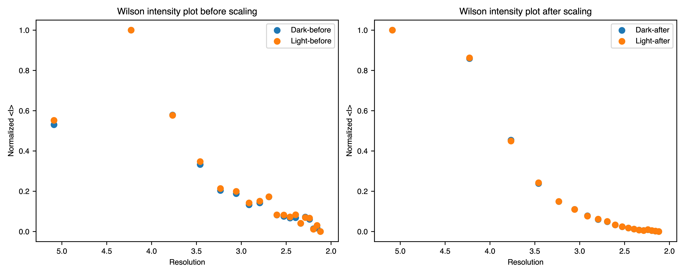
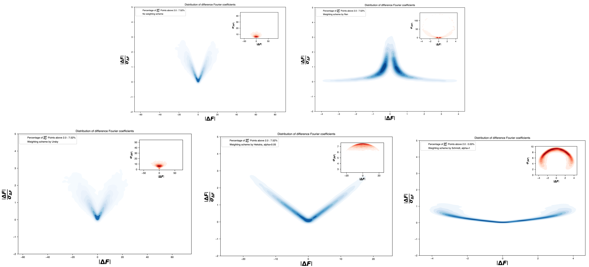
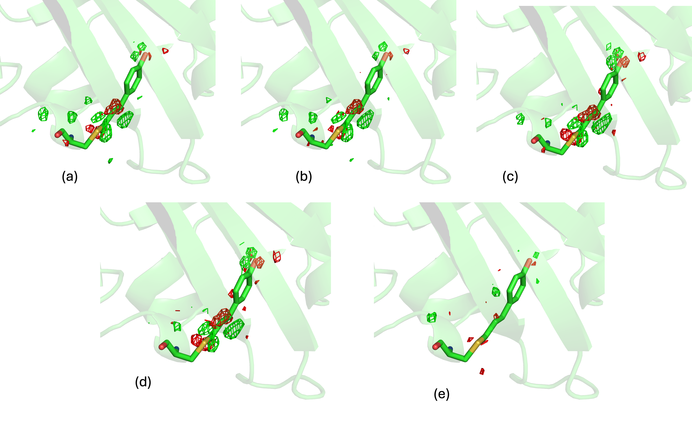

Quick Start
Getting started with ResiDEM.
The main command line utility of the ResiDEM is residem.
This utility generates isomorphous difference density map and identifies the residues associated with difference density.
The basic command line argument to run the calculation to generate isomorphous difference density (DED) map and identification is as follows:
residem -r 5b6v.pdb -m 5b6v.mtz -t 5b6x.mtz
residem -r 5b6v.pdb -m 5b6v.mtz -t 5b6x.mtz --scale aniso/iso/no -w ursby/ren/hekstra/default -sm cctbx/ccp4
In the above example, DED map is calculated for 760ns triggered structure (pdb id: 5b6x) with respect to dark state structure (pdb id: 5b6v).
Inputs
It requires a reference state pdb -r, an reference state -m and triggered state -t mtz file containing
structure factor amplitudes or intensities. The reference state,triggered state
mtz should also have a column associated with structure factor amplitudes and its associated sigma “FP,SIGFP” or
intensities with column name “I,SIGI”.
Scaling
Isomorphous difference density map rely on proper scaling of the reference state observed structure factor \(|F_{obs}^{ref}|\)
and triggered state observed structure factor \(|F_{obs}^{t}|\) .
This is done through resolution dependent scaling which can be either isotropic or anisotropic.
The tool has a few options to scale the reference and triggered state structure factor.
This consists of scaling using either cctbx scaling method or using ccp4 based scaleit method.
There are three options such as --scale no scaling, --scale iso isotropic scaling or --scale aniso.
The scaling can be done either using inbuilt method using -sm cctbx library or using -sm ccp4 scaleit.
After scaling, the time dependent intensities, Wilson Plots of \(|F_{obs}^{t}|^2\) and
the \(|F_{obs}^{ref}|^2\) have the approximately same slopes.
 Figure 1: Wilson plot of 760ns bR Intensities before and after anisotropic scaling.
Isomorphism idicators
Cross -R-Factor ( \(R_{iso}\)) and Isomorphism indicating correlation coefficient (\(CC_{iso}\)).
After scaling, an estimate can be obtained quantitatively to identify how similar the reference state data is isomorphous to the triggered state data. The \(R_{iso}\) is the mean fractional deviation between the observed amplitudes.
\(R_{iso}\) can be obtained by summing overall pairs of common reflections observed in both the data sets. \(R_{iso}\) values below 10% produces a clear difference density while \(R_{iso}\) up to 25% can still provide interpretable difference density[1].
Analogous equation for Isomorphism indicating correlation coefficient \(CC_{iso}\) is calculated by:
Higher \(CC_{iso}\) indicates higher Isomorphic correlation.
 Figure 2: Plot showing \(R_{iso}\) and \(CC_{iso}\)of 760ns bR data.
Figure 2: Plot showing \(R_{iso}\) and \(CC_{iso}\)of 760ns bR data.
Weights
DED maps can be noisy, and efforts are made to identify the source of the noise which might affect it. Ursby and Bourgeois(1997) introduced weighting scheme to extract the best difference map out of poorly measured data and its associated errors in the structural model required to calculate \(\phi_{ref}\). Two main errors associated to Difference structure factor (DSF) that are determined from (i) from large amplitudes as well as (ii) from poorly measured amplitudes with large experimental errors [2]. By incorporating Bayesian statistics to down weigh large difference or those with large experimental errors, Ursby and Bourgeois(1997) introduced weighting scheme to mitigate the noise in DED maps.
1. Urbsy weighting scheme
The weighting scheme implemented by Ursby and Bourgeois(1997) is given by:
Where ω is the weight, ε is the correlation factor for the expected intensity in reciprocal lattice zone (multiplicity factor)[3,4]. \(σ^2_{(obs,F)}\) is the variance of \(F\) in the parent (reference structure) and \(σ'^2_{(obs,F)}\) is the variance of the related (triggered) structure. \(σ_D^2\) is obtained by \(n\overline{(F'-F)^2)}/ε\) where \(\overline{(F'-F)^2} )\) denotes the mean of \((F'-F)^2\) and n=1 for centric reflections and 2 for acentric reflections respectively. Further, to reduce the overestimation of \(σ_D^2\), deconvoluted form may be used[5]. Deconvoluted form is achieved by subtracting \(\overline{σ^2_{(obs,F)}+σ'^2_{(obs,F)}}\) from \((F'-F)^2\)but not letting \(σ_D^2\) less than \(n\overline{(F'-F)^2)}/2ε\), i.e., The non-deconvoluted and deconvoluted version of \(σ_D^2\) are:
if \(σ_{D}^2 \geq σ_{ND}^2/2\)
else
2. Ren Weighting scheme
Ren et al. simplified the Ursby weighting scheme and given as follows:
3. Modified Ren weight/ Hekstra weighting scheme
Ren et al. was further modified by Schmidt et al., where mean of squares is taken instead of square of mean in denominator term. Hekstra et al., also use the modified Ren weight with some modifications in second term. The general representation of the modified Ren weight is given by:
Schmidt et al., uses \(\alpha =1\) while Hekstra et al., uses \(\alpha =0.05\)
4. General representation of weight
In general, the weighted isomorphous difference structure factor is given by
where the term \(\frac{ω_{hkl}}{\langle ω \rangle}\) may correspond weighting scheme such as ursby, ren and modified ren (hekstra) with \(\alpha=0.05/1\) as discussed above.
Nango et al. for Bacteriorhodopsin(bR) did not use any weights. So, to discuss more about the weight, test case of Photoactive yellow protein (PYP) published by Pandey et al., is discussed below.

Figure 3: Plot showing distribution of amplitude of difference structure factor as a function of signal-to-noise ratio. Clearer PDF file for the image can be found here.
In Figure 3, we see the distribution of difference Fourier coefficients plotted with signal-to-noise ratios with and without weight.
We can see the distribution of the difference structure factor. In the first distribution we can see the \(|\Delta F|\)
as a function of signal-to-noise ratio \(|\Delta F|/ σ_{| \Delta F|} \), in the inset of the plot is the distribution of
\(|\Delta F| \) vs \(σ_{| \Delta F|}\). It can be seen that by using modified Ren weight or hekstra weight with alpha=1 by Schmidt et al.,
is the one which satisfies the condition. This denotes that there are no large amplitudes with large experimental errors (sigma) values,
and hence is chosen as best weight for PYP.
The obtained isomorphous difference map (DED) without and with weight is shown in the following figure.

Figure 4: DED maps of PYP protein with 30ps time delay published by Pandey et al.,. (a) DED map without weight (b,c,d and e ) weighted DED map with various weighting scheme such as Ursby, modified Ren with alpha = 0.05, modified Ren with alpha =1 and weight implemented by Ren respectively.
The data associated with PYP can be downloaded from the supplementary data of the published paper and following command can be used to analyse the data.
residem -r dark_HCC_v6.pdb -m FOBS_dark1.mtz -t FOBS_30ps.mtz -rl "F_DARK,SIGF_DARK" -tl "F_30ps,SIGF_30ps" -fl "FC_DARK,PHIC_DARK" -w hekstra -ws 0.05
# This will generate Figure 3 in PDF format.
# in General the -ws term which corresponds to alpha has to be set to be 1.
residem -r dark_HCC_v6.pdb -m FOBS_dark1.mtz -t FOBS_30ps.mtz -rl "F_DARK,SIGF_DARK" -tl "F_30ps,SIGF_30ps" -fl "FC_DARK,PHIC_DARK" -w hekstra -ws 1
In both the cases, the program could identify the chromosphere (HCC-69) with C2-C3 double bond having the highest difference density contribution.
Quick description about the outputs
After running the previous command lines and if you see in tree command you might get the following.
.
|-- Data_folder_0
| |-- map_dump_default
| | |-- chain_A_U
| | | |-- Atom_peak_height_chain_A_U.pdf
| | | |-- Residual_peak_height.csv
| | | `-- Residual_peak_height_mean_chain_A_U.pdf
| | `-- chain_X_U
| | |-- Atom_peak_height_chain_X_U.pdf
| | |-- Residual_peak_height.csv
| | `-- Residual_peak_height_mean_chain_X_U.pdf
| |-- map_dump_hekstra
| | |-- chain_A_U_csv
| | | |-- map_dump_common_both_postv_n_negtv_chain_A_U.csv
| | | |-- map_dump_full_negative_chain_A_U.csv
| | | |-- map_dump_full_positive_chain_A_U.csv
| | | `-- map_dump_full_positive_negative_chain_A_U.csv
| | |-- chain_A_U_json
| | | |-- map_dump_common_both_postv_n_negtv_chain_A_U.json
| | | |-- map_dump_full_negative_chain_A_U.json
| | | |-- map_dump_full_positive_chain_A_U.json
| | | `-- map_dump_full_positive_negative_chain_A_U.json
| | |-- chain_X_U_csv
| | | |-- map_dump_common_both_postv_n_negtv_chain_X_U.csv
| | | |-- map_dump_full_negative_chain_X_U.csv
| | | |-- map_dump_full_positive_chain_X_U.csv
| | | `-- map_dump_full_positive_negative_chain_X_U.csv
| | `-- chain_X_U_json
| | |-- map_dump_common_both_postv_n_negtv_chain_X_U.json
| | |-- map_dump_full_negative_chain_X_U.json
| | |-- map_dump_full_positive_chain_X_U.json
| | `-- map_dump_full_positive_negative_chain_X_U.json
| |-- Difference_map_weighted_all.mtz
| |-- Difference_structure_factor_distribution.pdf
| |-- F_obs_minus_F_obs.ccp4
| |-- F_obs_minus_F_obs_hekstra_weight.ccp4
| |-- F_obs_minus_F_obs_ren_weight.ccp4
| |-- F_obs_minus_F_obs_ursby_weight.ccp4
| |-- R_iso_CC_iso.pdf
| |-- Residem.log
| |-- Wilson_plot_comparison.pdf
| `-- input.phil
|-- FOBS_30ps.mtz
|-- FOBS_dark1.mtz
|-- dark_HCC_v6.pdb
|-- final_tree.md
|-- initial_tree.md
`-- readme.md
input.philis a Python Hierarchial Input Language (phil) file containing all the input argument which can be used for reproduction.Difference_map_weighted_all.mtzmtz file contains difference map without and with weight for all the implemented weights and the phase of the reference model.Difference_structure_factor_distribution.pdffile contains distribution of the Difference structure factor with and without weights plotted as a function of signal-to-noise ratio.*.ccp4The DED maps in CCP4 format for various weights.R_iso_CC_iso.pdffile contains a plot representing \(R_{iso}\) and \(CC_{iso}\).Residem.logis a log file containing all the details.Wilson_plot_comparison.pdfcontains Wilson plot of normalized intensities before and after scaling. Ideally the slope of the intensities should be similar.map_dump_default,map_dump_hekstrafolder contains results of difference peak details for individual chains.
A detailed description of the content of the results are discussed in results and command line sessions.